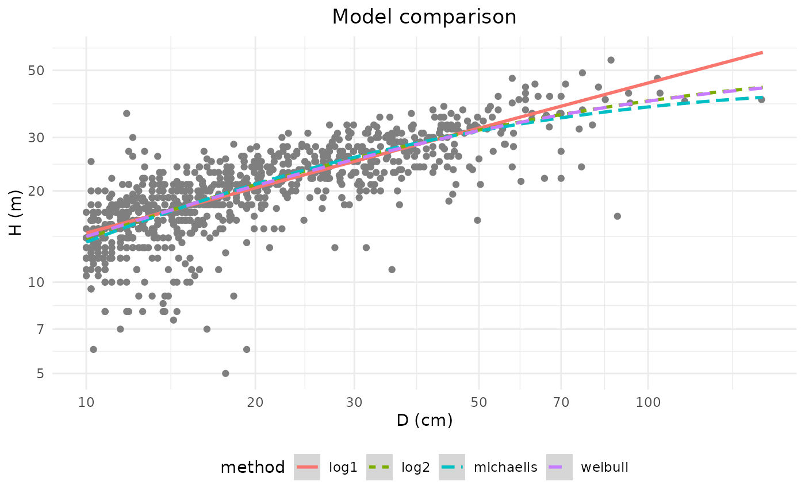
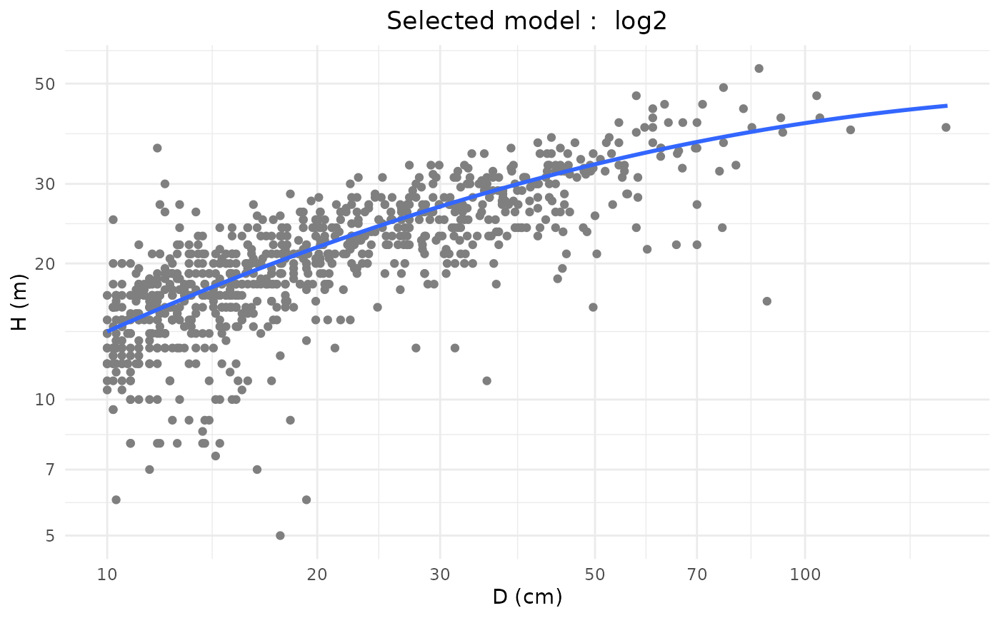
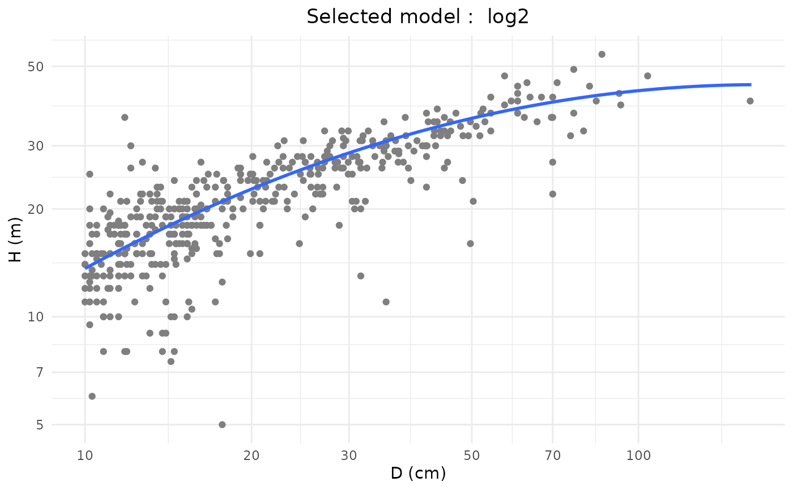
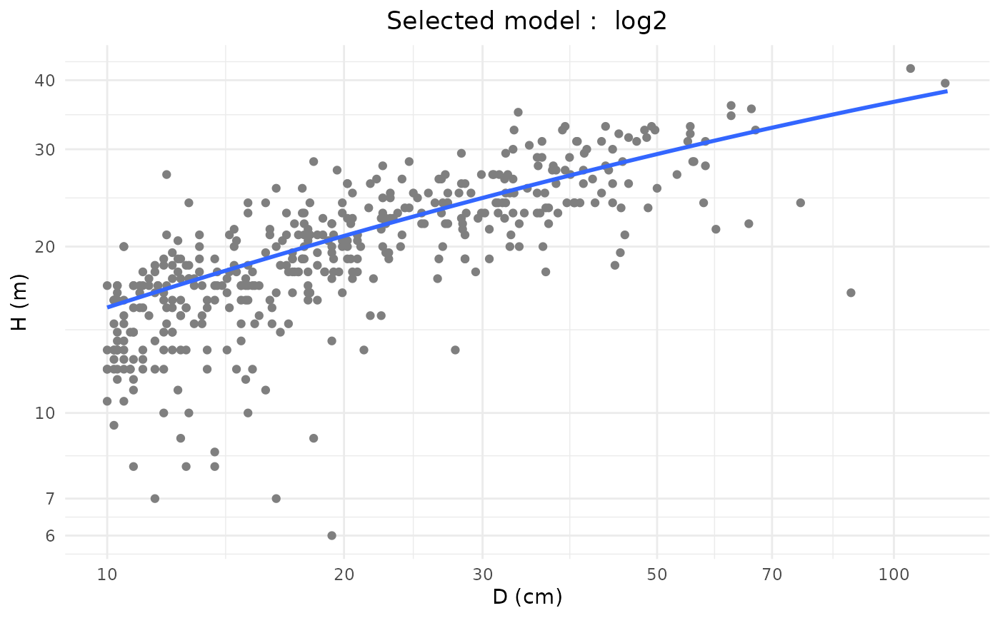

This function fits and compares (optional) height-diameter models.
Usage
modelHD(
D,
H,
method = NULL,
useWeight = FALSE,
drawGraph = FALSE,
plot = NULL,
bayesian = FALSE,
useCache = FALSE,
chains = 3,
thin = 5,
iter = 5000,
warmup = 500,
...
)Arguments
- D
Vector with diameter measurements (in cm). NA values are accepted but a minimum of 10 valid entries (i.e. having a corresponding height in H) is required.
- H
Vector with total height measurements (in m). NA values are accepted but a minimum of 10 valid entries (i.e. having a corresponding diameter in D) is required.
- method
Method used to fit the relationship. To be chosen between:
log1, log2
log 1: \((log(H) = a+ b*log(D))\) (equivalent to a power model)
log 2: \((log(H) = a+ b*log(D) + c*log(D)^2)\)
weibull: \(H = a*(1-exp(-(D/b)^c))\)
michaelis: \(H = (A * D)/(B + D)\)
If
NULL, all the methods will be compared.- useWeight
If weight is
TRUE, model weights will be \((D^2)*H\) (i.e. weights are proportional to tree volume, so that larger trees have a stronger influence during the construction of the model).- drawGraph
If
TRUE, a graphic will illustrate the relationship between H and D. Only if argumentplotis null.- plot
(optional) a vector of character containing the plot ID's of the trees (linked to D and H). Must be either one value, or a vector of the same length as D. This argument is used to build stand-specific HD models.
- bayesian
a logical. If FALSE (by default) the model is estimated using a frequentist framework (lm or nls). If TRUE, the model is estimated in a Bayesian framework using the brms package.
- useCache
a logical. If bayesian = TRUE, determine wether to use the cache when building a Bayesian model (see Details).
- chains
(only relevant if bayesian = TRUE): Number of Markov chains (defaults to 3), see
brms::brm()- thin
(only relevant if bayesian = TRUE): Thinning rate, see
brms::brm()- iter
(only relevant if bayesian = TRUE): number of total iterations per chain (including warmup; defaults to 5000), see
brms::brm()- warmup
(only relevant if bayesian = TRUE): number of warmup (aka burnin) iterations (defaults to 1000), see
brms::brm()- ...
Further arguments passed to
brm(), e.g: prior, cores, etc. Seebrms::brm()
Value
If plot is NULL or has a single value, a single list is returned. If there is more than one plot,
multiple embedded lists are returned with plots as the list names.
If model is not null (model comparison), returns a list :
input: list of the data used to construct the model (list(H, D))model: outputs of the model (same outputs as given bystats::lm(),stats::nls())residuals: Residuals of the modelmethod: Name of the method used to construct the modelpredicted: Predicted height valuesRSE: Residual Standard Error of the modelRSElog: Residual Standard Error of the log model (NULLif other model)fitPlot: a ggplot object containing the model fitting plotweighted: a logical indicating whether weights were used during the fit
If the parameter model is null, the function return a plot with all the methods for comparison, the function also returns a data.frame with:
method: The method that had been used to construct the plotRSE: Residual Standard Error of the modelRSElog: Residual Standard Error of the log model (NULLif other model)Average_bias: The average bias for the model
Details
All the back transformations for log-log models are done using the Baskerville correction (\(0.5 * RSE^2\), where RSE is the Residual Standard Error).
If useCache = TRUE and this is the first time the model is being built, the model will be saved as a .rds file in the defined cache path (see createCache()).
If useCache = TRUE and the model has already been built using the user cache, the model will be loaded and updated to avoid wasting time re-compiling it.
If useCache = NULL, the cache is first cleared before building the model.
Examples
# Load a data set
data(NouraguesHD)
# Fit H-D models for the Nouragues dataset
HDmodel <- modelHD(D = NouraguesHD$D, H = NouraguesHD$H, drawGraph = TRUE)

#> To build a HD model you must use the parameter 'method' in this function
# For a selected model
HDmodel <- modelHD(D = NouraguesHD$D, H = NouraguesHD$H,
method = "log2", drawGraph = TRUE)
# Using weights
HDmodel <- modelHD(
D = NouraguesHD$D, H = NouraguesHD$H,
method = "log2", useWeight = TRUE,
drawGraph = TRUE)

# With multiple stands (plots)
HDmodel <- modelHD(
D = NouraguesHD$D, H = NouraguesHD$H,
method = "log2", useWeight = TRUE,
plot = NouraguesHD$plotId, drawGraph = TRUE)


### Using log2 bayesian model
if (FALSE) HDmodel <- modelHD(D = NouraguesHD$D, H = NouraguesHD$H,
method = "log2", bayesian = TRUE, useCache = TRUE)
plot(HDmodel$model) # \dontrun{}
#> Warning: no non-missing arguments to min; returning Inf
#> Warning: no non-missing arguments to max; returning -Inf
#> Warning: no non-missing arguments to min; returning Inf
#> Warning: no non-missing arguments to max; returning -Inf
#> Error in plot.window(...): need finite 'xlim' values
### Using weibull bayesian model (time consuming)
# As the algorithm is likely to find numerous local minima,
# defining priors is strongly recommended (see "Some tricks" part in the vignette)
# Also, since model parameters and chain iterations are strongly correlated,
# an increase of 'thin', 'iter' and 'warmup' may be required.
if (FALSE) HDmodel <- modelHD(D = NouraguesHD$D, H = NouraguesHD$H,
method = "weibull", bayesian = TRUE, useCache = TRUE,
thin = 20, iter = 12000, warmup = 2000,
prior = c(brms::set_prior(prior = "uniform(0,80)",
lb = 0, ub = 80, class = "b", nlpar = "a"),
brms::set_prior(prior = "uniform(0,100)",
lb = 0, ub = 100, class = "b", nlpar = "b"),
brms::set_prior(prior = "uniform(0.1,0.9)",
lb = 0.1, ub = 0.9, class = "b", nlpar = "c"))) # \dontrun{}